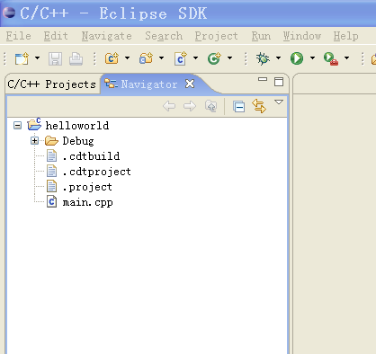

| Common Problems | ||
|---|---|---|
|
|
|
|
| Setting up Eclipse | Older Instructions | |
If you have followed these instructions everything should work. However, you may have ran into trouble, and then decided to look for the manual (at least, that's the way I would have done it). So now you have a problem and need an answer:
Please note if you are reading the online version: Some problems may covered in a newer version of this document, please refer to Introduction.
Make sure you have done the following things:
Especially made sure you did the last step. You will need to restart eclipse (full restart with shutdown, File / Restart is not sufficient). This solves about 99% of all support mails I've got so far.
Make sure you have done the following this:
Both of these steps are important, in particular when you upgraded from an earlier version of Mac OS X. Upgrading to Lion breaks your existing developer tools! Read also the full description in Mac OS X Compiler. It also covers problems during the XCode install.
You have just tried the build the hello world program, and you get this error message instead of an executable. This means that make is not in your path. Open up a command prompt (In OS X: Terminal in Applications/Utilities, in Windows: Start/Run, type in cmd) and type in make. If that doesn't work, try gmake.
If gmake worked, see
Configuring the CDT.
If neither worked, make sure you install make (See Setting up a compiler) and set your path (See Environment Variables in the case of Windows).
To check your path (on windows), open up cmd and type in echo %path%. This should show the path to MSYS and MinGW. Also, make sure that you restarted Eclipse (or cmd if you are testing) after setting your path.
If you are on Windows, and you have installed MinGW, but not MSYS, you may have an executable called mingw-make. In this case you have to go to
Configuring the CDT and configure appropriately. It is possible to just use mingw-make and no MSYS at all, however, mingw-make has some limitations. Eclipse CDT managed makefiles may or may not work with it. Please see the
MinGW FAQ for more information.
This error message means that g++ is either not installed or not in your path. Check your path settings as described in Build error (Exec error:Launching failed), CreateProcess: make -k all error=2,, but this time try the commands:
gcc --versionand
g++ --version. If gcc works, but g++ doesn't, it means you have only installed the C and not the C++ version of the gcc compiler, which happens quite frequently on Linux distributions. Check if you have all needed packages installed, and check Setting up a compiler.
If you are on windows, and neither of them worked, install MinGW and set your path environment variable. If only gcc one worked, reinstall MinGW and don't forget to select the C++ compiler!
Make sure you have done the steps in How to fix most of the common errors on Lion (Mac OS X 10.7).
If the problem still persist, and you are trying to compile C++ code, make sure your source files actually have an extension of ".cc" or ".cpp".
If you are on windows and use Eclipse 3.1 with CDT 3.0.0 there is a bug. See Configuring the CDT.
Please note that debug sessions in Windows have their own console window (a black console window) and do not appear in the regular Eclipse console. If you're running a debug session, please watch which windows appear in your task bar.
If you followed these instructions you have installed MSYS instead of cygwin. You may safely ignore this error message.
You have not installed the CDT. See Installing the CDT.
Every time I start Eclipse on my laptop, I can only compile and run a program once. After that it asks if I want to run it with errors every time. The compiler says this:
Building target: Project01Test.exe Invoking: GCC C++ Linker g++ -oProject01Test.exe ./test.o C:\MinGW\bin\..\lib\gcc\mingw32\3.4.2\..\..\..\..\mingw32\bin\ld.exe: cannot open output file Project01Test.exe: Permission denied collect2: ld returned 1 exit status make: *** [Project01Test.exe] Error 1 make: Target `all' not remade because of errors. Build complete for project Project01Test
Answer: Your program may still be running. Try stopping it by using the small red square on the console window (the one for your program). Another way is switching to the "Debug" perspective, selecting your running program, and stopping it there (also the small red square).
Unfortunately gdb is not included in the current (4.1.1 or 5.0.2) version of MinGW. See GDB (optional!).
Make sure you are using the make programs provided by MinGW. If your output in the console shows something like:
make -k clean all MAKE Version 5.2 Copyright (c) 1987, 2000 Borland Incorrect command line argument: -k
Then you have make installed from a previous installation of Borland C++. You have several choices:
There are several possible reasons for that:
C:\windows\system32 is in your path (should be there by default).
verify installation.
If you have no binaries folder, then one of several things may have happened:

This problem happens on Windows when you moved Eclipse out of its directory instead of creating a shortcut. Please move it back into the Eclipse directory, then drag'n'drop it using the right mouse button, where you can select "Create Shurtcut"
I personally do not recommend the installation of cygwin, but rather the installation of MinGW and MSYS as described in Windows compiler. However, the following problems have been reported by users:
Eclipse prefers to use cygwin if it is installed, and will do everything to manipulate the path to include cygwin if it is installed. Binaries will therefore by default be linked against the cygwin libraries. Possible workarounds:
-mno-cygwin to your compiler settingsYour workspace or your eclipse installation may use a path with includes spaces, such as C:\Documents and Settings. Eclipse sometimes fails in this case. Try creating your workspace in a different directory.
If you read the online version of this document, check out Introduction. You problem may be covered in a newer version of this document.
If you are still having trouble, you may try and send me an email. Please be aware that I may not respond to every email, as I am doing this support mainly as a hobby. Make sure your email includes the following. Please send the complete output!
echo %PATH%. In Linux / Mac OS X: echo $PATH).gcc --version)make --version or gmake --version)|
|

|
|
| Setting up Eclipse | Older Instructions |